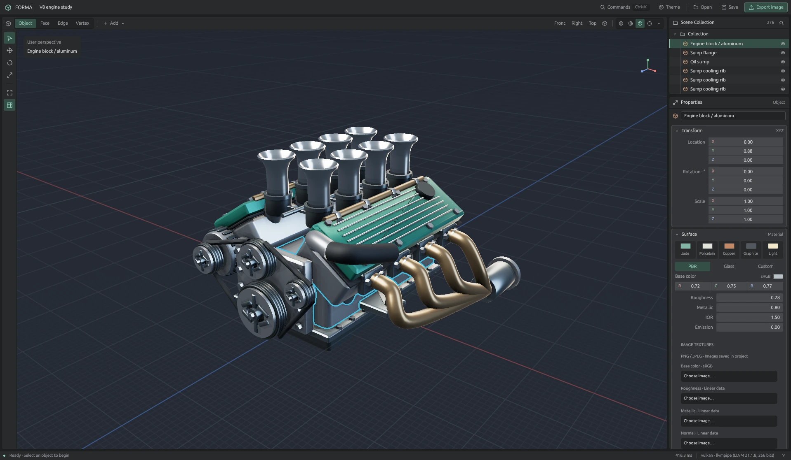

Geometry, under your control.
A cube, a sphere, a torus. Move, rotate, and scale. Select a face and extrude it. Refine the silhouette with subdivision, and dial in the details with exact transforms.
NATIVE TO YOUR DESKTOP. OPEN BY DESIGN.
Direct mesh editing. Materials and lighting.
A native, open-source 3D workspace for taking
an idea from its first face to its final form.
Free & open source · macOS, Windows, Linux

V8 engine study · 276 mesh objects · Material preview
Open screenshotCaptured in Forma. An illustrative mesh study open in the native editor.
A cube, a sphere, a torus. Move, rotate, and scale. Select a face and extrude it. Refine the silhouette with subdivision, and dial in the details with exact transforms.
Explore materials and HDR studio environments. Adjust the surface, change the atmosphere, and bring it together in the progressive path-traced viewport.
Keep moving with familiar shortcuts and a searchable command palette. Save your scene as .forma, exchange geometry with OBJ, or take a render with you as PNG.
Built with Rust and GPUI. Native graphics on macOS, Windows, and Linux.
Open source under MIT / Apache-2.0. Read it, build it, make it your own.
GET FORMA
A native 3D editor. Free and open source.
Build from sourceFind the latest available downloads and installation notes on GitHub.
Windows & LinuxBuild instructions ↗PLATFORMS & PROJECTS
Forma targets macOS with Metal, Windows with DirectX 12, and Linux with Vulkan. Use current graphics drivers and check the platform notes for build dependencies and tested configurations. Release notes describe the requirements for each packaged build.
Yes. Forma uses dual MIT and Apache-2.0 licensing. You can explore the code, build it yourself, and contribute on GitHub.
Forma focuses on direct mesh modelling and rendering: primitives, object and face transforms, extrusion, subdivision, materials, and lighting. It is in early development. Animation, sculpting, and UV editing are outside the current scope.
Import OBJ polygon geometry, save editable .forma projects, export geometry as OBJ, and export your viewport as PNG. OBJ imports combine groups into one object; imported UVs, supplied normals, and MTL materials are not retained.
Choose a packaged build and follow its release notes. If a download is not available, follow the source build instructions for your platform. Local packaging scripts do not sign, notarize, or install the application.